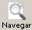
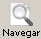

La base>>Estructura básica

Para que un navegador reconozca que lo que está viendo es una página WEB se utiliza la siguiente estructura:
<!DOCTYPE HTML PUBLIC "-//W3C//DTD HTML
4.01 Transitional//EN" "http://www.w3.org/TR/html4/loose.dtd"> (Etiqueta
que indica le indica al navegador el tipo de documento que se
va a iniciar y le permite interpretarlo correctamente. Verás que N|VU omite la
última parte de la etiqueta: aunque es una opción posible no es la más correcta.)
<html>
(Etiqueta que indica que lo que viene a
continuación es un
documento HTML)
<head>
(Etiqueta de apertura de la Título)
Aquí va la información sobre el título
de la página, el autor, palabras clave, etc. que no se
presentarán en la ventana del navegador, salvo el
título que aparecerá en la barra de
título de la parte superior
</head>
(Etiqueta de cierre de la Título)
<body>
(Etiqueta de apertura del cuerpo)
Aquí va el contenido de la página que
será lo que se presente en pantalla.
</body>
(Etiqueta de cierre del cuerpo)
</html>
(Etiqueta de cierre del documento)
No te preocupes por la aparente complejidad de la etiqueta inicial, ya que prácticamente todos los editores se encargarán de escribirla por ti.
Antes de comenzar los ejercicios prácticos comprueba que ya tienes creada una carpeta con el nombre "CursoHTML" para poder almacenar en ella el resultado de tu trabajo.
 ,
así que vamos a utilizar la pestaña
,
así que vamos a utilizar la pestaña  .
.<body>
y </body>) para saltar al siguiente
párrafo. .
para saltar al siguiente
párrafo. .  obtendrás un mensaje de error
obtendrás un mensaje de error  puesto
que el archivo con el que trabajas procede del CD-ROM y no puedes
escribir en él.
puesto
que el archivo con el que trabajas procede del CD-ROM y no puedes
escribir en él.  guardar como y salvar el fichero en la carpeta CursoHTML con
el nombre actividad2.html
(para que puedas enlazar fácilmente las actividades con su
enunciado las guardaremos siempre con el mismo número, por lo
que es posible que, en alguna actividad referida a procedimientos no
tengas ningún "producto" en tu carpeta de trabajo)
guardar como y salvar el fichero en la carpeta CursoHTML con
el nombre actividad2.html
(para que puedas enlazar fácilmente las actividades con su
enunciado las guardaremos siempre con el mismo número, por lo
que es posible que, en alguna actividad referida a procedimientos no
tengas ningún "producto" en tu carpeta de trabajo)  o bien el
botón  para cargar en el navegador el
documento que acabamos de salvar
y comprobar los resultados.
o bien el
botón  para cargar en el navegador el
documento que acabamos de salvar
y comprobar los resultados.
Supongo que coincidiremos en que lo que hemos visto al comprobar cómo había quedado nuestra primera creación no ha sido muy alentador.
La explicación del desaguisado es sencilla: en HTML hacen falta unas etiquetas especiales para indicar los saltos de línea y párrafo y no las habíamos escrito. ¡Las cosas no son tan sencillas como en un procesador de texto!
<br>
es la
etiqueta que sirve para indicarle al navegador que debe hacer un salto
de línea y, dada su función, no necesita etiqueta
de cierre siempre que nos movamos en el tipo de documento determinado
por las especificaciones de HTML 4.01.<p>
</p> es la que nos sirve para
indicar que lo que está comprendido entra la etiqueta de
inicio y la de final forman un párrafo que se separa de lo
anterior y lo posterior mediante el espacio que corresponde a un doble
salto de línea. <br>
donde
habíamos pulsado una vez la tecla .<p> donde
inicialmente habíamos pulsado dos veces la tecla y
cerramos el párrafo de texto con </p>. actividadN.html
puede que prefieras llamarlas de otro modo. No hay problema en que
adoptes tu propia nomenclatura, pero es importante que tus archivos
y carpetas no lleven tilde en el nombre. Por ejemplo,
tendrías que nombrarlos como practicaN.html en lugar de prácticaN.html,
a pesar de que parece claro que su sentido es el que corresponde al
sustantivo "práctica" y no a la forma verbal "practica".Aunque pueda haber resultado algo duro para empezar puedes respirar con tranquilidad porque estos son los últimos trabajos que realizamos directamente escribiendo los códigos. A partir de aquí empezaremos a utilizar el editor gráfico desde la pestaña normal que, básicamente, se encarga de escribir por nosotros las etiquetas necesarias, pero es de suponer que gracias a esta introducción hayamos podido comprender cómo se escribe una página HTML.
La importancia de asimilar la estructura básica reside en que una de las mejores formas de aprender a crear páginas HTML es viendo páginas creadas por otros autores. Si tenemos claro el sistema utilizado podremos reconocer los elementos que nos parezcan interesantes e irlos incorporando a nuestras páginas.